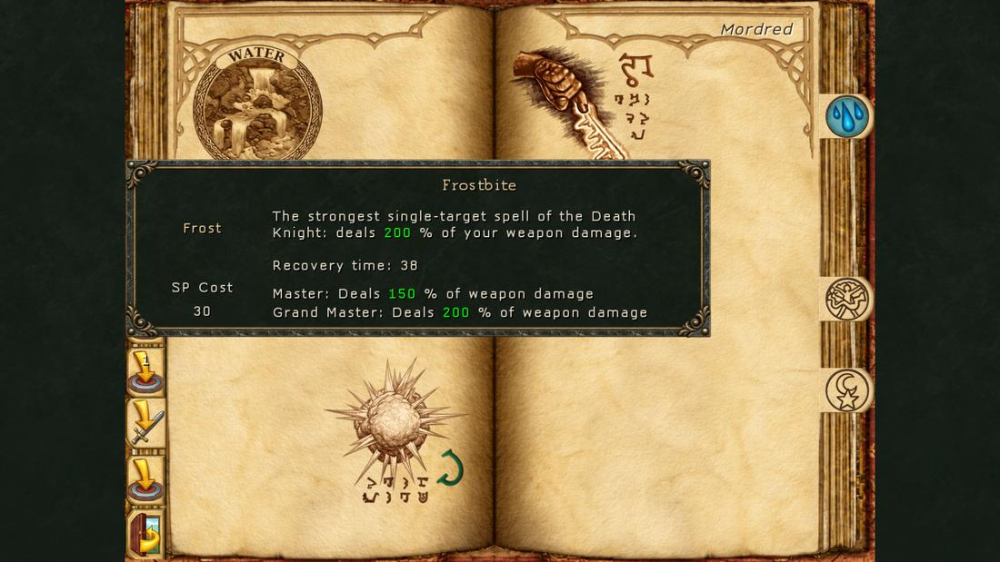
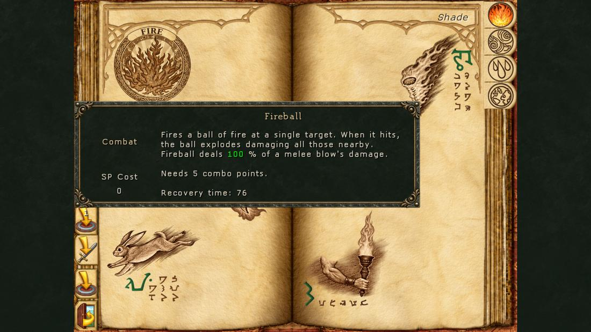

The old Learning skill, renamed. It gives no experience; it is one dial for every damage spell, heal and control spell (s = Ascension skill):
| Formula | s = 10 | s = 20 | s = 30 | |
|---|---|---|---|---|
| Damage per skill point (dice) | (1 + 0.02 s) × 1.02s | ×1.46 | ×2.08 | ×2.9 |
| Flat damage | (1 + 0.01 s²) × 1.02s | ×2.4 | ×7.4 | ×18.1 |
| Healing per point | (1 + 0.02 s) × 1.015s | ×1.39 | ×1.89 | ×2.5 |
| Flat healing | (1 + 0.01 s²) × 1.015s | ×2.3 | ×6.7 | ×15.6 |
| SP cost | (1 + 0.125 s) × 1.04s, −12.5 % per Ascension mastery rank | ×3.3 | ×7.7 | ×15.4 |
| Cast time | 1.015s | ×1.16 | ×1.35 | ×1.56 |
After Ascension every damage spell is multiplied by 0.7 (MAW's balance pass of November 2026), then by 1 + (the higher of Intellect and Personality) ÷ 1000, and it can crit. Weapon damage enchantments add to spells too (40 % for area spells). Auras, utility, travel, summons and cures do not ascend. Elementalists ascend from the average of their four elements, Shamans from their seven schools; Death Knights and Assassins do not ascend.
The tables give each spell's cost in SP before Ascension (N / E / M / GM when it differs) or the aura's weight. Damage is per point of skill in the school, before Ascension and the 0.7 factor.
| Spell | Mastery | Cost | What it does in MAW |
|---|---|---|---|
| Torch Light | Novice | Aura, 5 SP | Aura. Light around the party, brighter with each mastery. |
| Fire Bolt | Novice | 2 | 8 + 1–2 per skill point. |
| Fire Resistance | Novice | Aura, weight 60 | Aura. Party Fire resistance (10 + level/4) × (1 + 2 % per skill point), and +10 % Intellect plus 1 % per 5 points (at most 20 %). |
| Fire Aura | Novice | Aura, weight 90 | Aura. Every weapon in the party burns: each blow and arrow adds 10 / 15 / 20 / 25 % (N/E/M/GM) of the weapon's level damage as fire, at least 3 / 6 / 12 / 24 (doubled on two-handed weapons). The weapons in hand add it to damage spells too, 40 % on area spells. |
| Haste | Expert | Aura, weight 120 | Aura. Attacks and spells recover 10 % + 0.2 % per skill point faster (20 % at 50). No weakness when it ends. |
| Fireball | Expert | 8 | 1–8 per skill point to everything near the impact. |
| Fire Spike | Expert | 10 | Mine: 1–10 per skill point, ×1.33 at Master, ×1.67 at Grandmaster; 5 spikes at most. Recovery 100. |
| Immolation | Master | Aura, weight 40 | Aura. Burns nearby monsters for 10 + 1–30 per skill point each tick, scaled by Ascension. (MAW's own code dealt a flat 10; OpenYAMM follows MAW's tooltip.) |
| Meteor Shower | Master | 40 | Outdoors only. Each meteor: 2 + 1 per skill point; the per-point part does not grow with Ascension. Cost 40, recovery 200 (180 at GM). |
| Inferno | Master | 50 | Indoors only. Every monster in sight: 12 + 1–7 per skill point. Cost 50. |
| Incinerate | Grandmaster | 30 | 19 + 1–21 per skill point on one target. |
Fire Bolt is MAW's efficient workhorse: the flat 8 grows fastest with Ascension, so it stays cheap per point of damage at every level.
| Spell | Mastery | Cost | What it does in MAW |
|---|---|---|---|
| Wizard Eye | Novice | Aura, 5 SP | Aura. The minimap shows monsters and points of interest, more with each mastery. |
| Feather Fall | Novice | 2 | Unchanged: a timed spell. |
| Air Resistance | Novice | Aura, weight 60 | Aura. Party Air resistance (10 + level/4) × (1 + 2 % per point), and +10–20 % Speed. |
| Sparks | Novice | 4 / 8 / 10 / 12 | Each spark 1–4 per skill point. Cost rises with mastery: 4 / 8 / 10 / 12. |
| Jump | Expert | 5 | Unchanged. |
| Shield | Expert | Aura, weight 75 | Aura. Magic damage your party takes is cut by 15 % + 0.3 % per skill point (30 % at most). |
| Chain Lightning | Expert | 10 / 10 / 20 / 30 | Replaces Lightning Bolt. 12 + 1–8 per skill point, always hits, then leaps to the nearest hostile monster: 1 / 2 / 3 / 4 targets at N/E/M/GM, each leap with the first bolt's damage. Cost 10 / 10 / 20 / 30, recovery 100 / 80 / 100 / 120. |
| Invisibility | Master | 15 | Master: 22.5 minutes + 1.5 per skill point; Grandmaster: 45 minutes + 3 per point. In Road to Insanity and Beyond Madness it ends when an enemy reaches melee range. |
| Implosion | Master | 20 | 20 + 1–12 per skill point. |
| Fly | Master | 25 | Still a timed spell (not an aura). On Hard and harder, and in Austerity, attacking a monster turns it into Feather Fall, except on a few maps. A solo party's Fly scroll lasts 7 hours and is kept. |
| Starburst | Grandmaster | 60 | Outdoors only. 20 stars, each 7 + 1 per skill point; the per-point part does not grow with Ascension. Cost 60, recovery 140. |
| Spell | Mastery | Cost | What it does in MAW |
|---|---|---|---|
| Awaken | Novice | 1 | Unchanged. |
| Poison Spray | Novice | 2 / 4 / 5 / 6 | 5 + 1–3 per skill point per shot. Cost 2 / 4 / 5 / 6. |
| Water Resistance | Novice | Aura, weight 60 | Aura. Party Water resistance (10 + level/4) × (1 + 2 % per point), and +10–20 % Luck. |
| Ice Bolt | Novice | 4 | 6 + 1–7 per skill point. |
| Water Walk | Expert | Aura, 20 SP | Aura. Walk on water while held. |
| Empower Magic | Expert | Aura, weight 150 | Aura. Replaces Recharge Item. Your party's damage spells deal 15 % + 0.3 % per skill point more (30 % at 50). See the note below the table. |
| Acid Burst | Expert | 10 | 4 + 1–14 per skill point, always hits. |
| Enchant Item | Master | 15 | Unchanged. |
| Town Portal | Master | 20 | Refused with enemies near in Nightmare, Doom, Road to Insanity and Beyond Madness. A solo party keeps the scroll. |
| Ice Blast | Master | 25 | Each of the 7 shards 6 + 1–6 per skill point. |
| Lloyd's Beacon | Grandmaster | 30 | As Town Portal: refused with enemies near in Nightmare, Doom, Road to Insanity and Beyond Madness. A solo party keeps the scroll. |
Empower Magic: OpenYAMM uses the 15 % + 0.3 % per point that MAW's tooltip promises. MAW's own code read Haste's numbers (10 % + 0.2 %).
| Spell | Mastery | Cost | What it does in MAW |
|---|---|---|---|
| Stun | Novice | 1 | Crowd control. Crowd control with a success roll (the only one): the higher your Earth skill against the monster's level and resistance, the likelier it holds; bosses resist more. Knocks back. |
| Slow | Novice | 2 | Crowd control. Halves speed and doubles the monster's recovery: 6 / 7.8 / 9.6 / 12 s at N/E/M/GM (1/4 speed at Master, 1/8 at GM). |
| Earth Resistance | Novice | Aura, weight 60 | Aura. Party Earth resistance (10 + level/4) × (1 + 2 % per point), and +10–20 % Endurance. |
| Deadly Swarm | Novice | 4 | 8 + 1–5 per skill point. |
| Stone Skin | Expert | Aura, weight 75 | Aura. Party Armor Class (20 + level/4) × (1 + 2 % per skill point). |
| Blades | Expert | 8 | 7 + 1–7 per skill point; the only physical spell. |
| Stone to Flesh | Expert | 10 | Unchanged. |
| Rock Blast | Master | 15 | 8 + 1–8 per skill point. |
| Telekinesis | Master | 20 | Unchanged. |
| Death Blossom | Master | 50 | Outdoors only. Each shard 4 + 1–2 per skill point. Cost 50, recovery 180 (160 at GM). |
| Mass Distortion | Grandmaster | 30 | 15 % + 0.5 % per skill point of the target's current hit points, less on harder difficulties. Its cost grows with the caster's level, not the table. |
Stun and Slow are crowd control: their duration follows the crowd-control rule above, and Slow and Mass Distortion skip the old resistance roll.
| Spell | Mastery | Cost | What it does in MAW |
|---|---|---|---|
| Detect Life | Novice | 1 | Unchanged: a timed spell. |
| Bless | Novice | Aura, weight 75 | Aura. Party attack (20 + level/4) × (1 + 2 % per point), +10–20 % Accuracy, and +5 % to +10 % chance to hit. |
| Fate | Novice | Aura, weight 75 | Aura. Critical chance +5 % + 0.1 % per skill point (10 % at 50). |
| Turn Undead | Novice | 4 | Crowd control. All visible undead flee: 5 / 6.5 / 8 / 10 s at N/E/M/GM. |
| Remove Curse | Expert | 5 / 10 / 20 (E/M/GM) | Now also a heal: Expert 10 + 4 HP per skill point, Master 20 + 6, Grandmaster 30 + 8; cures Curse. Cost 5 / 10 / 20. |
| Preservation | Novice | Aura, weight 120 | Aura. Every member's soul is bound to the body (delays death). |
| Heroism | Expert | Aura, weight 120 | Aura. Melee damage +15 % + 0.3 % per skill point (30 % at 50). |
| Spirit Lash | Master | 15 | 20 + 2–16 per skill point to monsters around the caster. Range 384 at Master. |
| Raise Dead | Master | 20 | Grandmaster also removes Eradication. |
| Shared Life | Master | 25 / 40 (M/GM) | Pools the party's HP, adds 7 (Master) or 9 (GM) per two skill points minus 3 (4) per point, and shares it out evenly; nobody can die from it. Cost 25 / 40. |
| Resurrection | Grandmaster | 100 | Grandmaster: heals 150 + 21 HP per skill point and raises the dead and eradicated. Cost 100, recovery 300. |
| Spell | Mastery | Cost | What it does in MAW |
|---|---|---|---|
| Meditation | Novice | Aura, weight 120 | Aura. Replaces Telepathy. Your party regains SP over time, more with bigger pools, your level and Mind skill, and much faster out of combat. Gives nothing to Dragons, Assassins (Thief line) and Death Knights. |
| Remove Fear | Novice | 2 | Unchanged. |
| Mind Resistance | Novice | Aura, weight 60 | Aura. Party Mind resistance (10 + level/4) × (1 + 2 % per point), and +10–20 % Personality. |
| Mind Blast | Novice | 4 | 12 + 1–6 per skill point. Recovery 120 / 110 / 100 / 90. |
| Charm | Expert | 5 | Crowd control. Calms one monster: 13 / 16 / 20 s at E/M/GM. Cost 5. |
| Cure Paralysis | Expert | 8 | Unchanged. |
| Berserk | Expert | 10 | Crowd control. One monster attacks the nearest creature: 5.9 / 7.2 / 9 s at E/M/GM. |
| Mass Fear | Master | 40 | Crowd control. Everything in sight flees: 4.8 / 6 s at M/GM. Cost 40, recovery 200. |
| Cure Insanity | Master | 20 | Unchanged. |
| Psychic Shock | Master | 25 | 25 + 1–25 per skill point. |
| Enslave | Grandmaster | 30 | Crowd control. Grandmaster: one monster fights for you for 10 s. |
| Spell | Mastery | Cost | What it does in MAW |
|---|---|---|---|
| Cure Weakness | Novice | 1 | Unchanged. |
| Heal | Novice | 2 / 4 / 6 / 8 | Heals 4 / 8 / 12 / 16 + 2 / 3 / 4 / 6 HP per skill point; Personality adds more. Cost 2 / 4 / 6 / 8. |
| Body Resistance | Novice | Aura, weight 60 | Aura. Party Body resistance (10 + level/4) × (1 + 2 % per point), and +10–20 % Might. |
| Harm | Novice | 4 | 4 + 1–4 per skill point. |
| Regeneration | Expert | Aura, weight 120 | Aura. Your party regains HP over time, more with bigger HP pools, your level and Body skill, and much faster out of combat. |
| Cure Poison | Expert | 8 | Unchanged. |
| Hammerhands | Expert | Aura, weight 75 | Aura. Unarmed damage +15 % + 0.3 % per skill point (30 % at 50). |
| Greater Heal | Master | 15 / 25 (M/GM) | Replaces Cure Disease. Heals 25 + 7 HP per skill point (Master) or 40 + 10 (GM), and cures Disease. Cost 15 / 25. |
| Protection from Magic | Master | Aura, weight 180 | Aura. Party immune to Poison, Disease, Stone, Paralysis, Weakness, Death and Eradication from spells and monster abilities, and to Unconscious. |
| Flying Fist | Master | 25 | 20 + 1–5 per skill point. |
| Power Cure | Grandmaster | 30 | Grandmaster: heals every member 15 + 4 HP per skill point (Personality adds more). |
Heals and Personality: every heal is multiplied by 1 + Personality / (1000 + 3 × level), at most 4000 in the divisor. Heals never crit. Quick-casting Heal, Greater Heal or Remove Curse picks the member who needs it most.
| Spell | Mastery | Cost | What it does in MAW |
|---|---|---|---|
| Light Bolt | Novice | 5 | 12 + 1–2 per skill point; double against undead. |
| Destroy Undead | Novice | 50 | Undead only: 45 + 1–45 per skill point. Cost 50. |
| Dispel Magic | Novice | 15 | Unchanged (it cannot strip monsters' hold on your auras, which come straight back). |
| Paralyze | Novice | 20 | Crowd control. Holds one monster: 3 / 3.9 / 4.8 / 6 s at N/E/M/GM, half as long on bosses. |
| Summon Wisp | Novice | 25 / 50 / 75 / 100 | Cost 25 / 50 / 75 / 100 by mastery. With the summon cap reached, Master keeps up to 3 wisps, Grandmaster 5. |
| Day of the Gods | Expert | Aura, weight 200 | Aura. All seven stats +10 % + 1 % per 7 skill points (20 % at skill 70; Light counts up to 75). Does not add to the resistance auras' stat bonus. |
| Prismatic Light | Expert | 35 | Indoors only. 30 + 2–6 per skill point to all in sight. |
| Day of Protection | Master | Aura, weight 150 | Aura. All six resistances (10 + level/4) × (1 + 2 % per 1.4 points); a stronger single resistance aura counts instead. |
| Hour of Power | Master | Aura, weight 300 | Aura. Haste, Shield, Stone Skin and Fate at two thirds of your Light skill (counted up to 75); each the stronger of this and the spell's own aura. |
| Sunray | Master | 50 | 60 + 1–60 per skill point. Outdoors only by day; indoors any time. |
| Divine Intervention | Grandmaster | 55 | Unchanged. |
A Priest of the Light holding Day of the Gods, Day of Protection and Hour of Power needs more than 100 % of his mana: give one of them to another caster.
| Spell | Mastery | Cost | What it does in MAW |
|---|---|---|---|
| Reanimate | Novice | 10 | Unchanged. |
| Toxic Cloud | Novice | 15 | 15 + 1–9 per skill point. |
| Vampiric Aura | Novice | Aura, weight 150 | Aura. Replaces Vampiric Weapon. Party attacks heal: 5 % of melee damage, 2.5 % of missile and spell damage. |
| Shrinking Ray | Novice | 25 | Crowd control. Shrinks the target (monster damage ×0.7) for 8 s at any mastery, plus 1 / 2 / 3 more monsters near it at E/M/GM. |
| Shrapmetal | Expert | 30 | Each piece 1–7 per skill point. |
| Control Undead | Expert | 35 | Crowd control. One undead fights for you: 13 / 16 / 20 s at E/M/GM. |
| Pain Reflection | Expert | Aura, weight 10 | Aura. Monsters that hit you take the same damage. |
| Dark Grasp | Master | 45 | Crowd control. No missiles or spells, slowed, armour and damage cut: 9.6 / 12 s at M/GM. |
| Dragon Breath | Master | 50 | 1–28 per skill point to the target and those near it. |
| Armageddon | Master | 55 | 50 + 1 per skill point to everything on the map, your party included; three times a day, outdoors. The flat 50 now grows with Ascension. |
| Souldrinker | Grandmaster | 60 | 25 + 1–5 per skill point to all in sight, given to your party as healing. |
Death Knights do not use the normal spellbook: their Water, Body and Dark Magic become Frost, Blood and Unholy, and each mastery of a school gives one spell. Costs are fixed (no Ascension), the cast takes as long as a weapon blow, and the damage spells deal a share of your weapon damage. Their mana is a fixed pool (60 / 80 / 100 for Death Knight / Death Lord / Lich King) that every melee hit refills by 10 / 15 / 20 (×1.5 on a kill). Spell books cannot teach them. Toggle spells are switched on and off from the spellbook or quick cast, and charge their cost on every melee hit instead.
| Spell | School, mastery | Cost | What it does |
|---|---|---|---|
| Icy Touch | Frost, Novice | 15 | 100 % of weapon damage (120 % from Master); from Expert it slows the target to 1/2 speed for 2 s (1/4 at Grandmaster). |
| Water Walk | Frost, Expert | 0 | Aura: walk on water (reserves nothing). |
| Frostbite | Frost, Master | 30 | 150 % of weapon damage, 200 % at Grandmaster: the strongest single-target spell. |
| Ice Bomb | Frost, Grandmaster | 50 | A bomb that shatters into shards, each 75 % of weapon damage; best on big foes and groups. |
| Blood Leech | Blood, Novice | 6 per hit | Toggle: every melee hit heals you (more with Blood skill, mastery and maximum HP). |
| Regeneration | Blood, Expert | 0 | The Regeneration aura (reserves nothing). |
| Asphyxiate | Blood, Master | 70 | 110 % of weapon damage (140 % at Grandmaster) and stuns the target 4 s (2 s on bosses). |
| Superior Blood Leech | Blood, Grandmaster | 12 per hit | Toggle: twice Blood Leech's healing. |
| Vampiric Aura | Unholy, Novice | 0 | The Vampiric aura: party attacks heal 5 % of melee, 2.5 % of missile and spell damage (reserves nothing). |
| Death Coil | Unholy, Expert | 30 | 100 % of weapon damage (120 % at Grandmaster), and heals you for 20 % of what it took from the target's bar, 30 % from Unholy Master. |
| Death Grasp | Unholy, Master | 15 per hit | Toggle: each hit holds the monster in Dark Grasp for 2 s (deals 30 % less, half speed, melee only). |
| Death Breath | Unholy, Grandmaster | 100 | 60 % of weapon damage to every monster in the area; safe in close combat. |
MAW's sheet lists other percentages for some of these (Frostbite 120 %, Ice Bomb 50 %, Asphyxiate 120 %, Death Breath 40 %); the table follows the numbers MAW's code and OpenYAMM use. Besides spells, Frost and Unholy add flat melee damage, Frost adds attack speed, Blood cuts physical damage taken and adds melee leech, and Unholy cuts magic damage taken (see Classes).

Thieves, Rogues, Assassins and Spies turn Fire, Air, Water and Earth Magic into Combat, Subtlety, Poisons and Assassination. Their mana is energy (60 / 70 / 80 / 80, refilled quickly), their blows build combo points (up to 5, shown over the portrait), and damage spells spend combo points to deal a share of a melee blow. Each school knows its first spell untrained and one more per mastery. No Ascension; a spell takes two weapon blows' time. Their auras reserve nothing.
| Spell | School, mastery | Cost | What it does |
|---|---|---|---|
| Torch Light | Combat, untrained | 1 energy | Light aura. |
| Fire Aura | Combat, Novice | 0 | The Fire Aura aura (weapons add fire damage). |
| Haste | Combat, Expert | 0 | The Haste aura. |
| Fireball | Combat, Master | 5 combo | 100 % of a melee blow to everything near the impact. |
| Fire Spike | Combat, Grandmaster | 3 combo | A mine dealing 250 % of a melee blow. |
| Wizard Eye | Subtlety, untrained | 1 energy | Minimap aura. |
| Shield | Subtlety, untrained | 0 | The Shield aura. |
| Jump | Subtlety, Novice | 5 energy | Jump. |
| Chain Lightning | Subtlety, Expert | 5 combo | 150 % of a melee blow, leaping to further monsters. |
| Fly | Subtlety, Master | 25 energy | Fly. |
| Invisibility | Subtlety, Grandmaster | 15 energy | Invisibility. |
| Poison Spray | Poisons, untrained | 3 combo | 75 % of a melee blow per shot. |
| Water Walk | Poisons, Novice | 0 | Water Walk aura. |
| Acid Burst | Poisons, Expert | 3 combo | 300 % of a melee blow, always hits. |
| Town Portal | Poisons, Master | 20 energy | Town Portal. |
| Lloyd's Beacon | Poisons, Grandmaster | 30 energy | Lloyd's Beacon. |
| Stun | Assassination, untrained | 3 combo | 150 % of a melee blow and a stun. |
| Stone Skin | Assassination, Novice | 0 | The Stone Skin aura. |
| Blades | Assassination, Expert | 3 combo | 300 % of a melee blow as physical damage. |
| Telekinesis | Assassination, Master | 0 | Telekinesis. |
| Mass Distortion | Assassination, Grandmaster | 4 combo | 400 % of a melee blow. |
MAW's sheet lists Torch Light, Wizard Eye, Shield, Poison Spray and Stun as "Novice"; in play they need no training at all. The schools' passive perks (energy cost of blows, attack speed stacks, energy regeneration, flat damage) are on the Classes page.

The Elementalist uses the ordinary Fire, Air, Water and Earth spells (the tables above) but learns them by casting, not from books or teachers' spell lists. Every hit of one of your own offensive spells (1–44) on a hostile monster adds progress to that school (more for higher spells, stronger monsters and bigger parties; area spells a third). Each next spell of the school unlocks at a progress threshold (500, 1 500, 5 000, 10 000 … 320 000) and at the school mastery it needs: spells 1–4 of a school Novice, 5–7 Expert, 8–10 Master, the eleventh Grandmaster. Fire Bolt, Sparks, Poison Spray and Deadly Swarm are always known.
The racial schools are spells the race always casts from spell points.
| Spell | Race, mastery | Cost | What it does in MAW |
|---|---|---|---|
| Glamour | Dark Elf, Novice | 5 | Party buff that raises shop prices you get (merchant bonus). |
| Travelers' Boon | Dark Elf, Expert | 10 | Travel buff (unchanged). |
| Blind | Dark Elf, Master | 15 | Blinds a monster (unchanged). |
| Darkfire Bolt | Dark Elf, Grandmaster | 20 | 46 + 1–28 per skill point, resisted by the lower of Fire and Dark. Cost 20. |
| Lifedrain | Vampire, Novice | 5 / 5 / 10 / 15 | 1–22 per skill point, ×1.67 at Master, ×2.33 at Grandmaster; heals the vampire by a third of the damage. |
| Levitate | Vampire, Expert | 10 | Unchanged. |
| Charm | Vampire, Master | 15 | Crowd control. Charms a small group near the target: 16 / 20 s at M/GM (OpenYAMM reads the Vampire Ability mastery; MAW wrongly read the Dark Elf one). |
| Mistform | Vampire, Grandmaster | 30 | Physical damage taken −75 %; no physical attacks while in mist. |
| Fear | Dragon, Novice | 15 / 15 / 25 / 30 | Crowd control. Opponents flee: 4 s at Novice, 8 s from Expert (Dragon Ability mastery), without Ascension or resistance; at Master all nearby, at GM all in view. Recovery 120. |
| Flame Blast | Dragon, Expert | 25 / 40 / 50 / 60 | An exploding breath: 70 % of breath damage, 85 % at Master, 100 % at Grandmaster. |
| Flight | Dragon, Master | 15 | Flight (unchanged). |
| Wing Buffet | Dragon, Grandmaster | 30 | Knocks monsters back (unchanged). |